最新图片

|
||||||
| 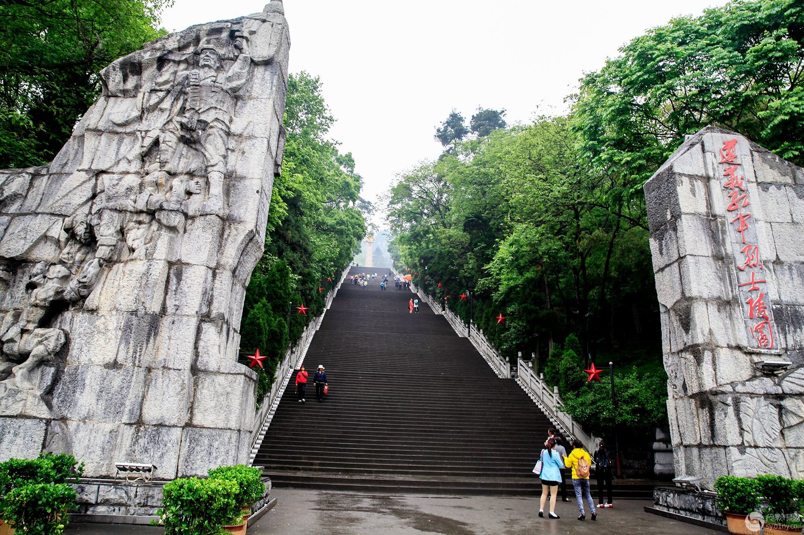 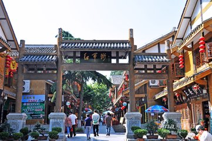 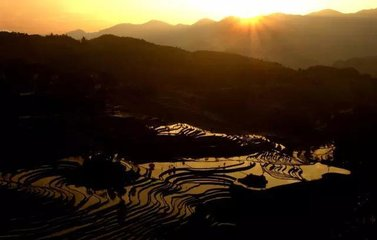 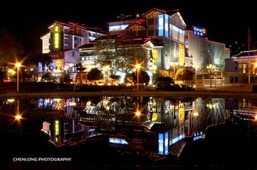 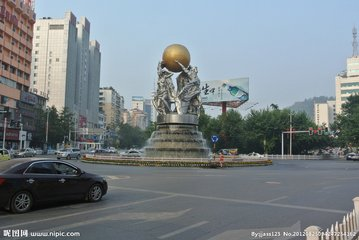 | ||||||
|
||
| 首页 醉美遵义 遵义小吃 遵义历史 遵义简介 了解遵义 | ||
遵义会议会址，位于贵州省遵义市红花岗区老城红旗路(原子尹路)80号，老地名叫琵琶桥。会址原系国民党二十五军第二师师长柏辉章的私邸。建于20世纪30年代初，建筑为砖木结构，中西合璧的两层楼房。 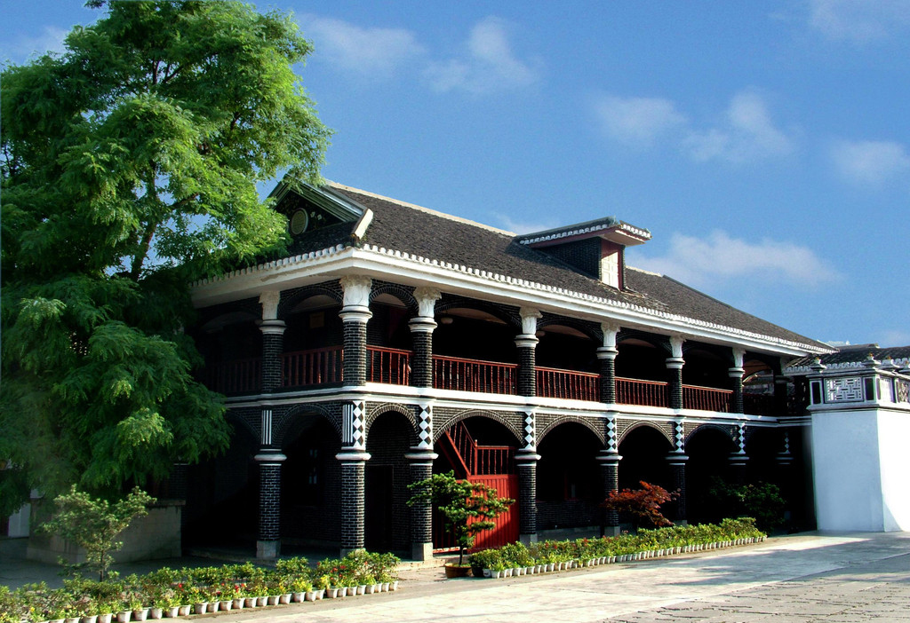 民国二十四年(1935年)1月初，中国工农红军长征到达遵义后，中华苏维埃共和国中央革命军事委员会总司部与一局(负责作点)即驻在这幢楼房里。1月15日至17日，遵义会议(即中共中央政治局扩大会议)，就在主楼楼上原房主的小客厅举行。这次会议确立了以毛泽东为代表的新的中央领导集体。遵义会议会址内的陈列馆、会议室、革命文物、历史资料、历史照片，是让后人对革命先烈勇于斗争、百折不挠、不怕牺牲的革命精神感的深刻认识，了解这段艰苦卓绝的二万五千里长征中的遵义会议、四渡赤水出奇兵等红色历史来继承和发扬遵义会议革命传统，传承红色基因，用革命文化传播和滋养社会主义核心价值观。开拓中国特色社会主义更为广阔的发展前景。 1961年，遵义会议会址被国务院列为第一批全国重点文物保护单位。2005年，被评为国家AAAA级旅游景区。 |
登红军山，除了祭奠烈士外，还可看遵义的全景。 去遵义除了看会址，还要看红军山。遵义的红军烈士陵园修建在市内小龙山上，与当年红军鏖战的红花岗、老鸦山遥遥相望，集中了建国后在遵义各处找到的红军遗骨，故又称红军山。 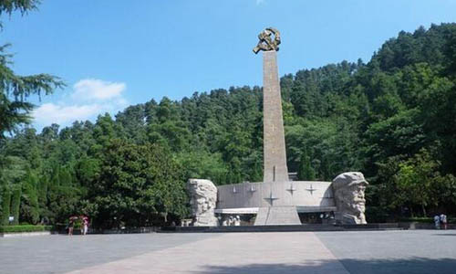整个陵园庄严肃穆，正面是在纪念遵义会议五十周年时兴建的一座别具特色的纪念碑，碑上为邓小平同志手书的竖写"红军烈士永垂不朽"八个金色大字。 拾级而上，只见满山青松翠柏，一座巨大的红砂石墓茔掩映在万绿丛中，里面安葬着红三军团参谋长邓平同志的骨灰。 山上还有一座青石圆坟，坟前立着一块石碑，上书"红军坟"三个大字。里面葬着一位当年为遵义人民治病而惨遭反动派杀害的红军卫生员。 |
|
最新图片
|
||||||
| 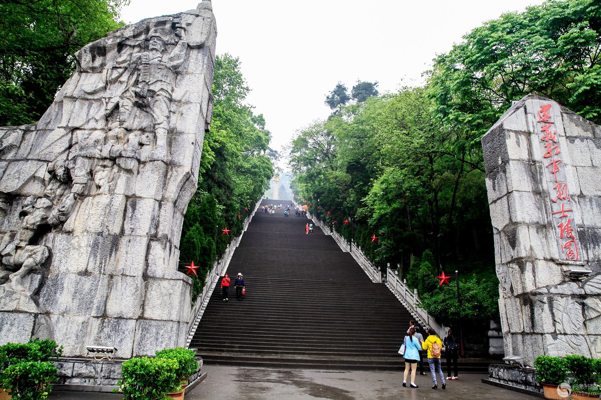 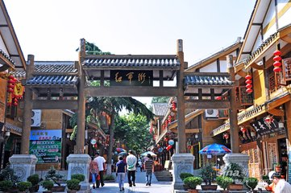 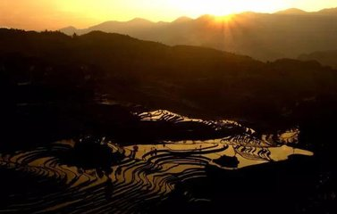 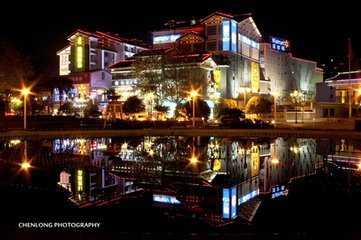 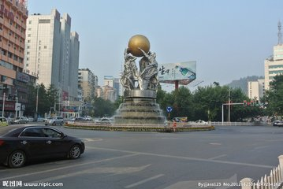 | ||||||